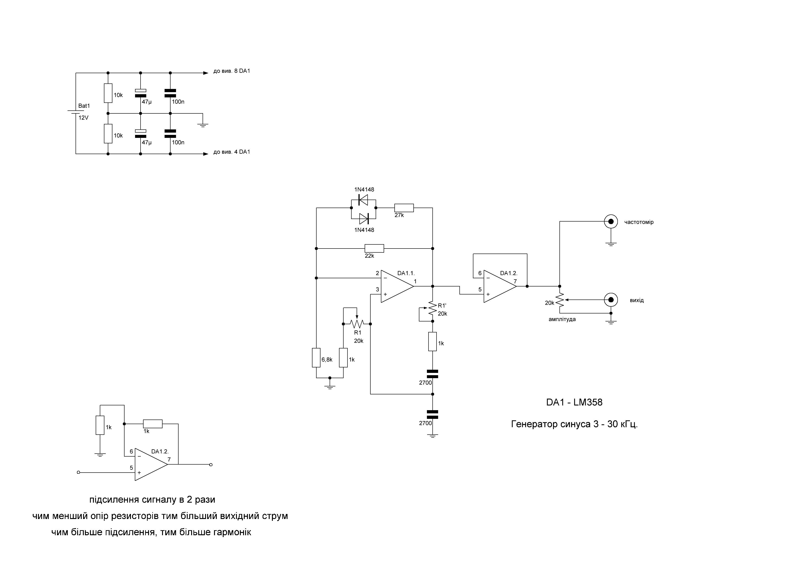

Генератор синуса для експериментів з VLF. Від 3 до 30 кГц.

Для різноманітних експериментів з радіо дуже корисним інструментом є генератор синусоїдального сигналу. Показую свою просту саморобку, яка генерує стабільний чистий синус від 2,8 до 35 кГц. Такий діапазон я обрав навмисно для експериментів з VLF. Ви можете змінити діапазон для своїх конкретних завдань. Схема дуже варіативна.
Я використав операційний підсилювач LM358, хоча підійде буквально будь-який популярний операційний підсилювач. Коливання відбуваються за допомогою моста Віна. Це проста і надійна схема, яка багато разів мене виручала. У мене схема живиться від 12 в, хоча можна живити від 9 до 15 в. Генератор має два вихідні роз'єми. Один до потенціометра, і другий після потенціометра. На роз'ємі після потенціометра можна змінювати амплітуду. Роз'єм до потенціометра можна використовувати для контролю, підключивши туди частотомір. Резистор R1 це здвоєний резистор на 20 кОм, за допомогою нього регулюється частота. На першому каскад операційного підсилювача побудовано генератор, а на другому повторювач, який виконує роль буфера, щоб навантаження не впливало на генератор.
Відео про генератор ви можете переглянути на моєму ютуб-каналі.